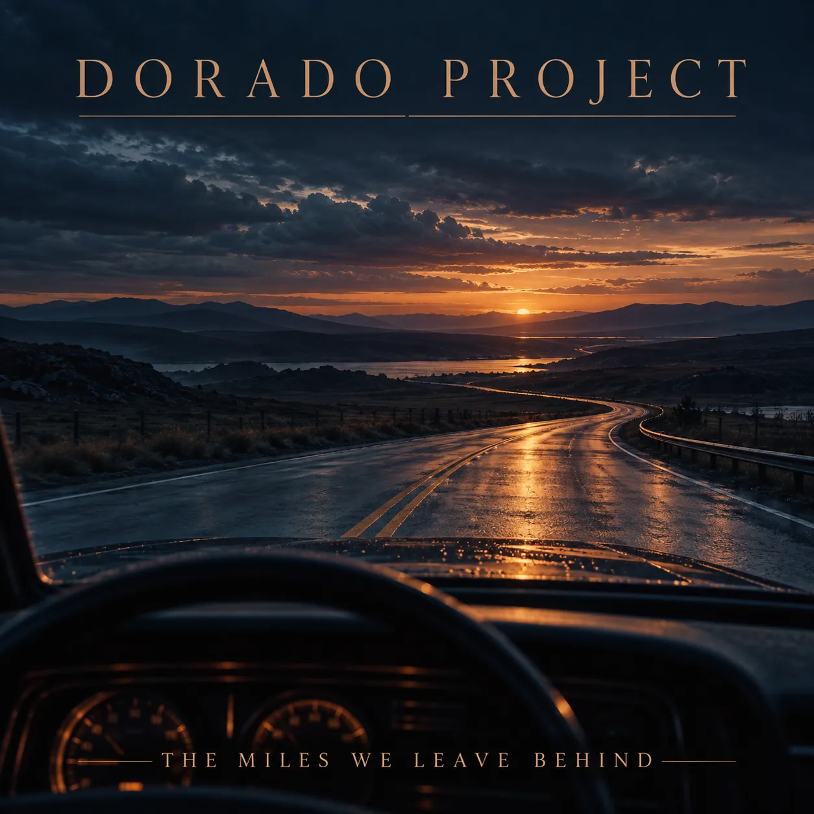

SINGLE · GUITAR ROCK
The Miles We Leave Behind
Atmospheric rock / Guitar rock
A long, unhurried road song: a spacious instrumental opening, a low baritone, few words and extended electric-guitar solos.
Listen on Spotify →
SINGLE · GUITAR ROCK
Atmospheric rock / Guitar rock
A long, unhurried road song: a spacious instrumental opening, a low baritone, few words and extended electric-guitar solos.
Listen on Spotify →From synthpop to rock: explore more tracks and the story behind Dorado Project.
Explore all tracks →